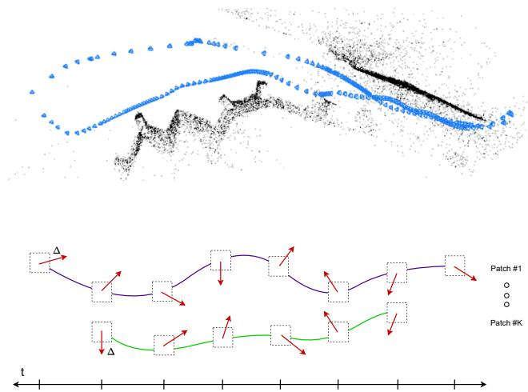
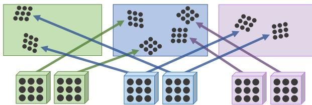
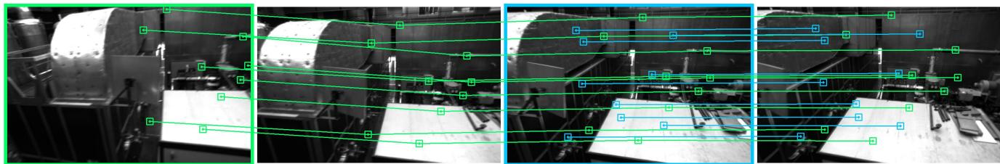
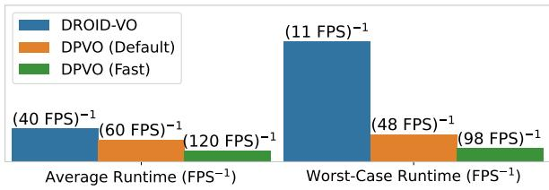
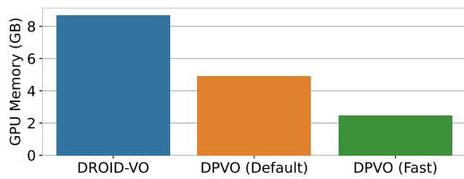
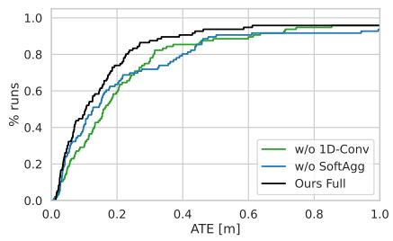

本块收尾：DROID 的稀疏化 VO 分叉——精度反升、速度快 3×、显存 <1/3，走的是「往下减」这条暗线 🪶
搞懂 DPVO 是0145 DROID-SLAM 的稀疏化 VO 分叉：它把 DROID 那套「每像素稠密光流」换成「每帧随机采几十个图像块（patch）的跨帧轨迹」，靠 1D 时序卷积 + 图消息传递在 patch 间传信息，反而更准、更快、更省显存。要显式回链 0132 RAFT（CorrBlock 一系的继承），并点明它走的是和 0129–0131「上复杂度」相反的「往下减」暗线——呼应 0004 KISS-ICP「少即是多」的方法论取向。
0145 DROID-SLAM：DPVO 复用它的可微 BA 层（DBA）与 RAFT 式循环迭代，只是把稠密光流换成稀疏 patch——本课必须和 0145 并置。0132 RAFT：DPVO 的 patch 相关体、循环更新算子直接来自这一系，必须回链。0018/0019 BA：DROID/DPVO 的 BA 层都是可微、稠密/稀疏化的 BA 对照。0129–0131 是「上复杂度」；0132/0133 与本课是「往下减」——本季方法论暗线在 VO 块收口。0004 KISS-ICP 的「少即是多」是同一精神。
0145 的 DROID 很强，但有个毛病：它要把每一帧的每一个像素都拿去算光流（稠密光流），太吃算力、太吃显存（24GB），相机一动快了还会掉到 11FPS。DPVO 想：非要每个像素都看吗？
打个比方：你在陌生房间走路认路，不必盯住墙上每一根纹理，只要认准几个固定标志物（插座、门把手、画框），记住「这个标志物从一帧到下一帧挪到哪」，路就认出来了。DPVO 就是这么干：每帧随机撒几十个图像块（patch，比如 96 个），循环网络跟踪「这些块跨时间怎么动」，再用一个可微 BA 层把块的运动换算成相机位姿。术语先露脸：patch = 图像上一块 p×p 的小区域（本课用「图像块」）；patch graph / 图像块图 = 一个二部图，一头连 patch、一头连帧，边表示「这个块出现在哪几帧」（见 §9 自绘图）；patch trajectory = 同一个块从第一帧到最后帧的运动轨迹；factor head = 网络末端吐「修正量 δ + 置信度 Σ」的小头；可微 BA 层 = 和 0145 一样能把几何误差反传回去的一层（见 0018/0019）。
本块叙事收口：DeepVO（黑箱）→ D3VO（嵌几何）→ 0145 DROID-SLAM（可微稠密 BA 层） → 0146 DPVO（同一范式的稀疏 VO 分叉）。DPVO 和 DROID 同出 Princeton、同一团队，连 BA 层都共用——区别只在「喂给 BA 的是什么」：DROID 喂每像素稠密光流，DPVO 喂稀疏 patch 轨迹。
更关键的是暗线：本季匹配块里 0129 SuperGlue、0130 LoFTR、0131 LightGlue 一路「上复杂度」（图注意力、Transformer、最优传输）；而 0132 RAFT、0133 SiLK 已经开始「往下减」（循环迭代 + 极简前端）。DPVO 是这条「往下减」暗线在 VO 块的极点：它用稀疏随机 patch 反驳了「稠密流才冗余抗错」的假设——和第一季 0004 KISS-ICP「少即是多」是同一方法论取向：不是模块越复杂越好，往往是减对了地方反而更强。
每帧：两个残差网络各提一份特征——matching net（1/4 分辨率、D=128、Instance Norm，用于查对应）和 context net（D=384、无 Norm，当记忆）；输出 1/4 与 1/8 两级金字塔。然后每帧随机采 96 个 patch（默认），组成 patch graph。Update Operator 在 patch 图的边上跑：correlation（在 7×7 网格内积查相似）→ 1D 时序卷积 → Softmax 消息传递（patch/frame 两种）→ Transition 块（门控残差 + LayerNorm）→ Factor Head 吐 2D 修正 δ 与置信度 Σ∈(0,1)。最后稀疏版 DBA 层把 δ 解成位姿与 patch 深度。图 1 是总览。

原图注（Fig. 1）：Deep Patch Visual Odometry (DPVO). Camera poses and a sparse 3D reconstruction (top) are obtained by iterative 2D revisions of patch trajectories through time.
怎么看这张图：输入是视频，输出是「相机位姿 + 稀疏三维重建」。核心是「patch trajectories」——图中那些在帧间连成线的小块，反复在 2D 上被修正，最终既得到位姿也得到稀疏点云。注意它是稀疏的（只有少数块），不是 DROID 那种每像素稠密图。
要记住的一句话：DPVO = 跟踪少量图像块的跨帧轨迹 + 可微 BA；稀疏却能比稠密还准。

原图注（Fig. 3）：The patch graph. Edges connect patches with frames. Multiple patches are extracted from each frame (e.g. blue) and are connected to nearby frames (green and purple).
怎么看这张图：左是「patch↔帧」的二部图（一头蓝点=patch，一头绿/紫色=不同帧），边表示「这个 patch 出现在哪几帧」。右是它在图像上的具象——每帧采多个 patch，跨帧连成轨迹。这是 DPVO 整个表示的骨架，也是它比 DROID 省的根。
要记住的一句话：patch graph 把「哪些块、出现在哪些帧」组织成一张可学习的二部图——稀疏散点替代稠密流场。

原图注（Fig. 5）：A subset of the patch trajectories predicted by our method. Patches extracted from the green keyframe are tracked through subsequent frames. When a new keyframe is added (blue), additional patches are extracted and tracked. Our method produces confidence values which weight their respective contribution to the bundle adjustment.
怎么看这张图：绿关键帧采的块沿后续帧连成轨迹（彩色线）；蓝关键帧加入时再采一批新块。每条轨迹带一个置信度，BA 时按置信度加权——「这块跟得准就多信它」。
要记住的一句话：置信度 Σ 让 BA 自动忽略跟丢的块；所有帧都先当关键帧，所以帧率恒定（不像 DROID 快动掉帧）。
DROID 的代价来自「每像素都要算光流」——那是 H×W 个量在每轮迭代里滚。DPVO 的洞察：光流里大量像素是冗余的（同一平面的像素个个都算一遍，信息重复）。既然 0145 的 DBA 层本质是在解「patch/像素的轨迹」，那干脆只采少量 patch（默认 96 个/帧），让它们之间的「图消息传递」去补偿被丢掉的冗余。
具体机制：① 在 patch 上做 correlation（7×7 邻域内积，比 DROID 全帧相关体轻）；② 用 1D 时序卷积沿「同一 patch 的时间轴」卷，把历史信息压进当前；③ 用 Softmax 消息传递在 patch 之间、patch↔帧之间传信息——同一平面的块会互相印证。反直觉结论：丢掉稠密冗余后，精度不降反升，且随机采 patch 中心点比 SIFT/ORB/SuperPoint/高梯度点都好（见 §6 消融）。
和 0018/0019 的对照仍在：DPVO 的 BA 层和 DROID 共用同一套可微 BA，只是 DPVO 是稀疏版——阻尼硬编码 1e-4、2 次 Gauss-Newton（DROID 学阻尼）。目标函数形式一致：
这句话在说什么：对 patch 图每条边 (k,j)，把 patch k 在帧 j 的「预测位置 $\hat P_{kj}'$」加网络给的 2D 修正 δ，和「用位姿 T 把 patch 投到帧 j 应该到的地方 $\hat\omega_{ij}(T,P_k)$」比，差多少按置信度 Σ 加权求和要最小。注意它优化的是稀疏 patch 的轨迹（不是每个像素），所以 BA 层是稀疏的、极轻——这就是 DPVO 又省又准的根。
DPVO 是监督，真值来自纯合成 TartanAir（和 0142 TartanVO、0145 DROID 同一数据源）。训练 24 万 iter、bs1、单 RTX3090、约 3.5 天、AdamW(lr 8e-5)、序列长 15（前 8 帧初始化）、展开 18 次更新。采样时让帧间光流幅度 16–72px（逼网络学大位移）。损失：
这句话在说什么：位姿损失占大头（权重 10），光流损失辅助（权重 0.1）。位姿监督先用 Umeyama 把预测轨迹和真值对齐（消掉整体平移/旋转/尺度这种 gauge 自由度），再取 SE(3) Log 误差；光流监督取「patch 诱导出的流」和真值流的最小误差。权重 10:0.1 说明 DPVO 主要盯位姿准不准，光流只是帮 CorrBlock 学对应——和 0145 DROID 的「位姿+光流」双监督同思路，但更偏位姿。
| 对照项 | DROID-SLAM（0145） | DPVO（本课） |
|---|---|---|
| 监督信号 | 合成 TartanAir 真值 | 合成 TartanAir 真值 |
| 喂给 BA 的表示 | 每像素稠密光流 | 每帧 96 个稀疏 patch 轨迹 |
| 损失结构 | 位姿 + 光流（加权） | 10·位姿 + 0.1·光流 |
| BA 层 | 稠密、学阻尼 | 稀疏、阻尼硬编码 1e-4 |
| 展开更新次数 | 15 | 18 |
Ours(Default) 0.21，比 DROID-SLAM 0.33 低 40%、比 DROID-VO 0.58 低 64%。
Avg 0.105，比 DROID-VO 0.186 低 43%；最快 120FPS 变体仍多数胜出。
TUM 0.089（vs 0.098）；ICL 0.097（vs 0.215，快变体低 51%）。
Default 60FPS / 4.9GB、Fast 120FPS / 2.5GB；DROID-VO 40FPS/8.7GB。帧率恒定（95% 帧 >48FPS）。
「往下减」带来的回报很硬：精度在 4 个数据集全面超过 DROID-VO（TartanAir 甚至超过完整 DROID-SLAM），而速度是 1.5–3×、显存不到 1/3。关键反直觉消融（Fig 9c）：随机采 patch 中心点比 SIFT/ORB/SuperPoint/高梯度点都好——说明「让网络自己决定采哪」不如「撒一把随机块 + 靠消息传递补信息」。

原图注（Fig. 8）：Efficiency of DPVO compared to DROID-VO (the front-end of DROID-SLAM). The Default and Fast variants of DPVO run 1.5x (60FPS) and 3x (120FPS) faster on average. DPVO’s frame-rate is relatively stable, remaining above 48FPS and 98FPS for 95% of frames. In contrast, DROID-VO drops to 11FPS, an 8.9x difference.
怎么看这张图：DPVO 的帧率曲线平（95% 帧 >48FPS），DROID-VO 快动时暴跌到 11FPS（8.9× 差）。这是因为 DPVO「所有帧先当关键帧、只追 96 块」开销恒定，而 DROID 的稠密流随运动变难而变慢。
要记住的一句话：稀疏化让速度恒定且便宜——这是「往下减」最直接的工程红利。

原图注（Fig. 10）：Memory usage of DPVO compared to DROID-VO, measured on the EuRoC dataset. DROID-VO uses 8.7GB, DPVO (Default) uses 4.9GB and DPVO (Fast) uses 2.5GB.
怎么看这张图：显存从 8.7GB 砍到 4.9/2.5GB（<1/3）。代价几乎全在「不再存每像素稠密光流与相关体」——只存稀疏 patch 轨迹，内存自然塌下来。
要记住的一句话：把稠密流换成稀疏块，显存不到 DROID 的三分之一，这是它能上消费级显卡的根。

原图注（Fig. 9）：Ablation experiments. (a) We show the importance of using patches over point features. (b) Removal of different components of the update operator degrades accuracy. (c) Randomly selecting patch centroids works better than 2D keypoint locations produced via SIFT [22], ORB [29], Superpoint [9], or pixels with high image gradient.
怎么看这张图：(c) 是反直觉核心——随机采样 patch 中心比所有手工关键点（SIFT/ORB/SuperPoint/高梯度）都好。说明「稀疏块 + 图消息传递」自己就能学到该关注哪，不需要人类先验去挑点。
要记住的一句话：随机撒块 > 手工选点——这彻底坐实「往下减」不是偷工，是更对的归纳偏置。
这张图在画什么：左帧撒几个小方块（patch），右帧同一批方块挪了位置，用线把「同一个块」连起来；线粗表示这两块被网络判定为同一平面、运动一致（粗红线移得远=大位移），细蓝线移得近，紫块单独一条。
怎么看这张图：① 整张图只有不到 10 个块，不是每像素——这就是「稀疏」；② 线粗细编码「是否同一平面」，等价于 DSO 里「同一平面的点共线/共面」的几何先验；③ 只要这些块的轨迹被跟踪准，BA 就能解出位姿，无需稠密流。
要记住的一句话：patch graph = 撒少量块 + 用线粗表示共面；稀疏表示替代稠密流场。
这张图在画什么：左是 DROID——整帧密密麻麻都是光流箭头（H×W 个），冗余、贵、快动掉帧；右是 DPVO——每帧只 6 个示意块（实际 96），块间用粗/细线连表示共面，靠图消息传递补上丢掉的冗余。
怎么看这张图：① 稠密不是「更稳」的同义词——DPVO 证明稀疏块 + 消息传递反而更准；② 代价差来自「不存每像素流与相关体」；③ 这正是 0004「少即是多」与 0132/0133「往下减」在 VO 块的落地。
要记住的一句话：稠密流场 → 稀疏块，减的是冗余、留下的是信息；精度反升、速度 3×、显存 <1/3。
这张图在画什么：合成 TartanAir 真值（位姿+流）→ 网络吐修正 δ、置信度 Σ、位姿、深度 → 稀疏 DBA 层解出位姿/深度 → 循环展开 18 次。损失是 10·位姿 + 0.1·光流，主盯位姿。
怎么看这张图：① 训练信号和 0142 TartanVO、0145 DROID 同源（合成 TartanAir）；② 权重 10:0.1 说明 DPVO 比 DROID 更偏位姿；③ 循环展开是 RNN 那套「反复擦改草稿」（见 0145 自绘图），但优化对象是稀疏 patch 而非每像素。
要记住的一句话：合成训、偏位姿、稀疏表示——DPVO 的训练信号是 DROID 的「轻量分叉」。
下面哪句最准？
正确。DPVO 是 DROID 的「稀疏化分叉」：它把每像素稠密光流换成每帧 96 个稀疏 patch 轨迹，靠 1D 时序卷积 + 图消息传递补回丢掉的冗余。结果精度反升、速度 1.5–3×、显存 <1/3。这是「往下减」暗线（对照 0004 少即是多、0132/0133）在 VO 块的极点，不是又堆了一层注意力。
不对。DPVO 没有靠「加注意力」取胜——它的更新算子用的是 correlation + 1D 时序卷积 + Softmax 消息传递，是比 DROID 更轻的循环结构，不是叠 Transformer/图注意力。它赢在「减对地方」：用稀疏 patch 替代稠密流，靠消息传递补冗余。这属于本季 0129–0131「上复杂度」的反面——「往下减」。
| 论文 | 喂给 BA 的表示 | 训练信号 | 速度/显存 |
|---|---|---|---|
| DeepVO | 无（黑箱回归） | 位姿真值 | 未给 |
| D3VO | 无（DSO 现成 BA） | 自监督+合成 | — |
| DROID-SLAM | 每像素稠密光流 | 合成 TartanAir | 40FPS / 24GB |
| DPVO | 每帧 96 稀疏 patch | 合成 TartanAir | 60–120FPS / 2.5–4.9GB |
本块从 0141（PoseNet≠VO、DeepVO 起点）走到 0146，主线是「位姿被神经网络一点点吃掉」：DeepVO 把整条 VO 黑箱化 → 0142 自监督/跨域 → 0143 加后端 → 0144 D3VO 嵌几何 → 0145 DROID 把 BA 做成可微层 → 0146 DPVO 把稠密流减成稀疏块。DPVO 是这条线上的「收口精简版」：它证明 0011「深度学习吃掉位姿」不只是「越复杂越能」，而是「网络+几何融合对了，还能往下减」。这恰好呼应本季方法论暗线——0129–0131 上复杂度、0132/0133 与 0146 往下减，而 0004 KISS-ICP 早把这话说过一遍。
下面哪句是课文给的结论？
正确。Fig 9c 的反直觉结论是：随机撒 patch 中心点比 SIFT/ORB/SuperPoint/高梯度点都好。说明「稀疏块 + 图消息传递」自己就能学到该关注哪，不需要人类先验挑点——这坐实「往下减」不是偷工，是更对的归纳偏置。手工选点反而限制了网络。
不对。正好相反：课文 Fig 9c 明确说随机采 patch 中心点比 SIFT/ORB/SuperPoint/高梯度点都好。手工关键点（SIFT/ORB 等）是人类的「该关注哪」先验，但在 DPVO 这种「稀疏块 + 消息传递」框架里反而是约束、不如随机撒。若记成「手工点更准」就颠倒了课文的核心反直觉结论。
DROID 的稠密流里同一平面的像素逐个算，信息大量重复（冗余）。DPVO 只采 96 个块，看似丢了冗余，但用两条机制补回：① 1D 时序卷积沿同一 patch 的时间轴卷，把该块的历史运动压进当前状态；② Softmax 消息传递在 patch 间、patch↔帧间传信息——同一平面的块会互相印证「我们该共面、该一起动」，等效于把「相邻像素该一致」的平滑先验用图结构表达。所以稀疏表示 + 图传播 ≈ 稠密流的冗余收益，但便宜得多。
SIFT/ORB 等是人工设计的「显著点」先验，假设「角点/高梯度」最该跟踪。但 DPVO 的 BA 靠的是块之间的几何一致性（共面、共线）和消息传递，而不靠单点显著。随机撒块覆盖更均匀、不偏重某些纹理，网络靠消息传递自己决定哪些块有用、并用置信度 Σ 把跟丢的块在 BA 里降权。手工选点反而把「该采哪」固化了，限制网络。这正是「让归纳偏置来自结构（图），不来自人工特征」的体现。
RAFT（0132）为光流建 4D 相关体 + 多尺度金字塔 + 循环更新算子。DROID/DPVO 同团队，把这套「查对应 + 循环迭代」拿来：DPVO 的 correlation（7×7 网格内积）和 Update Operator（1D 卷积 + 消息传递 + Transition + Factor Head）就是 RAFT 思路在「patch 轨迹」上的精简移植；区别是 RAFT 更新稠密光流、DPVO 更新稀疏 patch，且多一层可微 BA（稀疏版）把更新转成几何解。所以本课必须回链 0132。
两者共用同一套可微 BA 思想（目标都是让重投影/投影误差可反传）。差别：① DROID 是稠密 BA（每像素深度参与），DPVO 是稀疏 BA（只优化 96 个 patch 的轨迹与深度）；② DROID 学阻尼，DPVO 把阻尼硬编码 1e-4；③ DPVO 只跑 2 次 Gauss-Newton（够用，因为变量少）。稀疏 + 硬编码阻尼是它显存砍到 1/3、速度恒定且便宜的直接原因。
匹配块里 0129 SuperGlue / 0130 LoFTR / 0131 LightGlue 一路加复杂度（图注意力、Transformer、最优传输）；0132 RAFT 用循环迭代替代一次性稠密匹配、0133 SiLK 用极简前端+简单匹配，开始「往下减」。DPVO（0146）把这条线推到 VO 块极点：把 DROID 的稠密光流减成稀疏 patch，证明「减对地方反而更准更快更省」。这和第一季 0004 KISS-ICP「少即是多、反工程化」是同一方法论取向——本季在 VO 块用它收口。